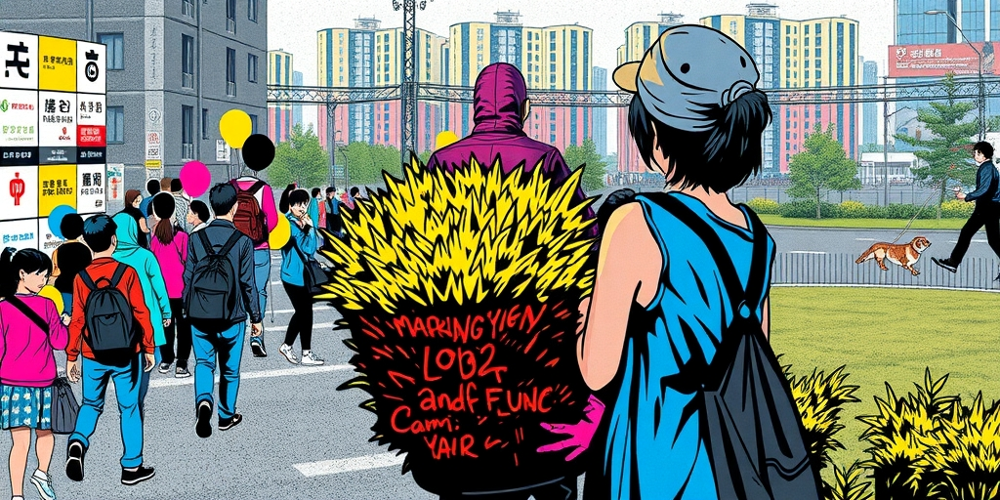
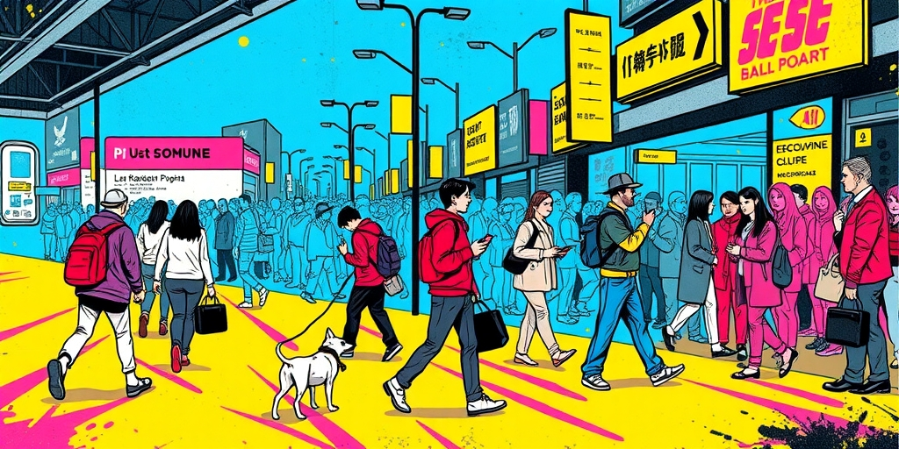
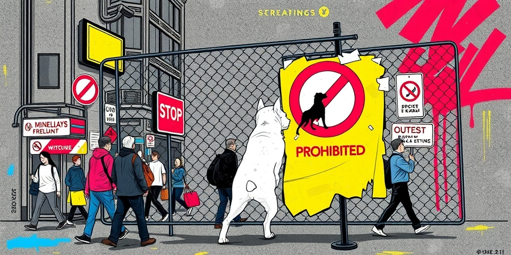
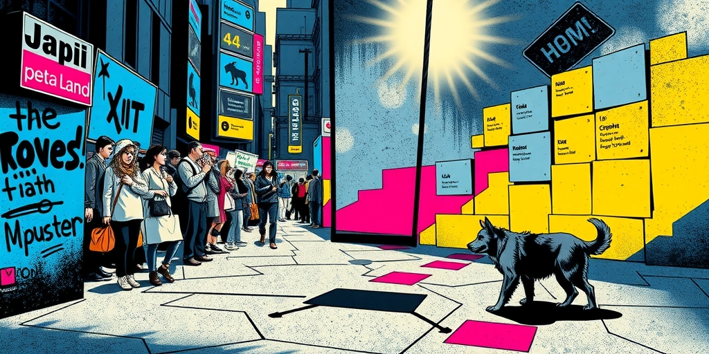

小汪老师的成长洞察 · 属于你的成长专栏
一个三四岁孩子的母亲每天带他下楼，默认的前提是楼下安全。她不会想到要检查草丛里有没有蹲着一只罗威纳。7月7日之后，上海某个小区的母亲们再也无法做这个默认了。那26秒的视频撕裂的不只是一个孩子的身体，是普通人用半辈子积蓄买来的安全幻觉。

小区对中国人意味着什么。是房产证上那个平方米数字的外延。是孩子可以自己下楼玩的边界。是老人晚饭后散步的路径。是你每个月交物业费时心里默认购买的东西——安全。
这份安全平时是隐形的。你只有在它消失的时候才意识到它的存在。7月7日上海青浦那个小区里，一个男孩在自家楼下被两只未拴绳的烈犬拖行撕咬。母亲趴在地上跟狗搏斗的26秒传遍全网。从那天起，那个小区的母亲带孩子下楼前会先扫一眼草丛。这个动作本身，就是安全崩塌的刻度。
公众的愤怒没有停在狗主人身上。因为所有人都看懂了同一件事：狗主人当然有罪，但如果一个三四岁的孩子在交了物业费、遵守了所有规则、生活在禁养令覆盖的城市里，还是会在楼下被咬——那这座城市的养犬管理系统就是空的。愤怒对着狗主人，失望对着整个体系。

这起事件里塌掉的防线不止一道。第一道是狗主人的个人责任。养烈犬、不拴绳、放任犬只闯入公共区域。刑事责任追得很快，狗主人已被采取刑事强制措施。这是最末端也最直接的一道防线，塌得毫无悬念。
第二道是管理系统的缺位。上海有烈性犬禁养目录，但执行靠什么？靠狗主人自觉申报，靠邻居举报，靠物业保安巡查。每一环都是软的，没有硬约束。禁养令在纸上是禁令，在现实里是一条潜规则：只要你不出事，就没人管你。
第三道是旁观者的行动。26秒的视频里，除了母亲在地上跟狗搏斗，没有一个路人上前。网上有人骂冷漠。但这不是冷漠，是经典的旁观者效应。围观的人越多，每个人越倾向于认为“别人应该会去帮”。责任感被稀释，行动被延迟。在极端场景下，这种心理机制的代价是一条腿、一张脸、一条命。

烈犬管理的核心困境在于它落在三个部门的夹缝里。公安管治安，城管管市容，物业管小区。一只罗威纳咬人之前归谁日常监管？不归任何一个部门。只有咬了人，公安才介入。整个体系的逻辑是事后追惩，不是事前预防。
但一只六十斤的烈犬冲进儿童游乐区这件事，不能靠事后追惩来解决。孩子被咬了之后你把狗主人判刑，孩子的腿已经没了。事前预防需要什么？需要有人入户检查狗种，需要专业人员鉴定，需要狗主人配合。每一项都需要执法资源。在没有足够资源投入的情况下，禁养令只能是一纸空文。
更深一层：城市养犬管理的执行成本极高，但不出事的时候这个成本是隐形的。决策者感受不到压力，就不会配置资源。所以禁养令的宿命就是：在每一次恶性事件之后被舆论提起，然后在下一个事件之前继续沉睡。

狗主人被抓了。刑事强制措施启动得很快。但禁养令还是禁养令，物业巡查还是物业巡查。那只可能在下个小区咬人的罗威纳，此刻正趴在某间客厅的地板上。它的主人没有拴绳的意识，没有邻居举报，没有物业上门。
这个城市的安全管理逻辑有一个致命缺陷：它把预防的责任摊给了每个人——养狗人的自觉、邻居的警惕、物业的勤快——却没有给任何人硬约束的工具。当预防依赖自觉，它就不是系统，是祈祷。
公众的愤怒表面上是针对一个狗主人的疏忽，底层是对整个治理逻辑的绝望。你收我的税，收我的物业费，给我禁养令的口号。但我的孩子在楼下还是不安全。我们还要付出多少条腿，才能把安全防线从事后追惩推到事前预防？这个问题，比抓一个狗主人难得多。
写给你的话
我们习惯认为安全是交钱买来的东西。交税买公共安全，交物业费买小区安全。但安全不是商品，它是一套需要硬约束的系统设计。当禁养令的执行依赖“大家自觉”，它就不是禁令，是倡议。你住的小区，禁养令怎么落地？是有人定期巡查，还是靠邻居不养烈犬的善意？下次你带孩子下楼前，这个问题的答案，决定了你要不要先看一眼草丛。
小汪老师的成长洞察 · 属于你的成长专栏